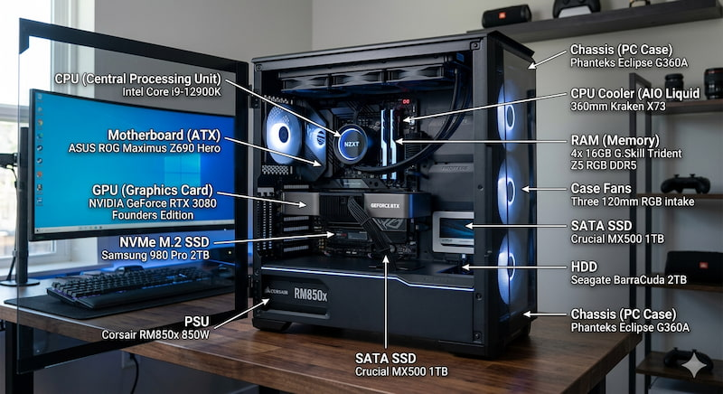

Unique Strengths, Shared Success: The Hardware Philosophy
At Knowing Your PC, we believe that every piece of hardware is a specialist with its own unique personality. No component is perfect; rather, each carries a specific set of strengths and weaknesses that define the character of your build. A high-end GPU offers breathtaking visuals but demands massive power and generates significant heat. A high-speed NVMe Gen5 drive slashes load times to seconds but can become a "hot spot" on your motherboard without dedicated cooling. Building a PC isn't about buying the most expensive parts; it's about balancing these unique traits to create a harmonious system.
Our mission is to help you navigate these trade-offs. We focus on the "Structural DNA" of hardware—understanding that a "weak" component isn't necessarily bad; it might just be the wrong fit for your specific goals. By deconstructing how parts interact, we empower you to build a machine that plays to its strengths while mitigating its inherent weaknesses, ensuring your PC remains a reliable tool for years to come.
Hardware 101: The Building Blocks of Your PC
Let's break down the core components that make up your PC, each with its own role in the system:
- CPU (Central Processing Unit): The "brain" of your computer, responsible for executing instructions and processing data.
- GPU (Graphics Processing Unit): Handles rendering images, videos, and animations, crucial for gaming and creative work.
- RAM (Random Access Memory): Temporary storage that allows your computer to access data quickly while running applications.
- Storage (HDD/SSD): Where your data is permanently stored. SSDs are faster than traditional HDDs.
- Motherboard: The main circuit board that connects all components and allows them to communicate.
- Power Supply Unit (PSU): Provides power to all components. It's essential to have a reliable PSU to ensure system stability.
- Cooling System: Keeps your components at safe temperatures. This can include fans, heat sinks, or liquid cooling solutions.
CPU (Central Processing Unit)
The CPU is the brain of your computer, responsible for executing instructions and processing data.
- Choose a CPU that matches your needs (e.g., gaming, content creation, general use).
- Consider the number of cores and threads for multitasking performance.
- Check compatibility with your motherboard's socket type.
- Don't overspend on a CPU if your primary use is gaming; a mid-range CPU paired with a good GPU can often provide better value.
GPU (Graphics Processing Unit)
The GPU handles rendering images, videos, and animations, crucial for gaming and creative work.
- For gaming, prioritize a GPU with good performance in the games you play.
- For content creation, look for GPUs that excel in tasks like video editing or 3D rendering.
- Ensure your power supply can support the GPU's power requirements.
- Keep an eye on GPU temperatures; high-end models can generate a lot of heat and may require additional cooling solutions.
RAM (Memory)
RAM allows your PC to multitask efficiently.
- Install ram in the correct slots for dual-channel performance.
- Match ram speeds and sizes when upgrading.
- Avoid mixing incompatible ram sticks.
- Enable xmp in BIOS for better performance.
Storage (SSD/HDD)
Storage devices hold your files and operating system.
- Use SSDs for faster boot and load times.
- Keep at least 20% free space for optimal performance.
- Regularly back up important data.
- Check drive health using monitoring tools.
Cooling System
Cooling keeps your PC running safely and efficiently.
- Ensure proper airflow (intake and exhaust fans).
- Clean dust filters regularly.
- Consider liquid cooling for high-performance builds.
- Monitor temperatures to avoid overheating.